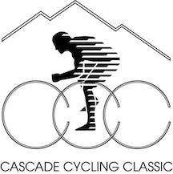
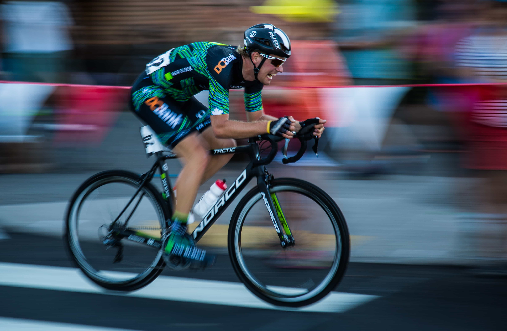

The Race
5 Day CCC May 29th-June 2nd
3 Day CCC May 31st-June 2nd
Jerseys
Prize List
Tech Guide
History
registration
Men Pro/1
Women Pro 1/2
Men Cat 2
Junior Men and Women
Amateur Categories
watch
Livestreaming
Sul Fiume Cycling Festival
Spectating Stage by Stage

News
Race Blog
Press Inquires
experience
Volunteer
Support the CCCYF
Sul Fiume Cycling Festival
partners
CCCYF
Sponsors
Sponsor
tumalo cr

Painted hills RR
cascade lakes rr
sul fiume crit
awbrey butte rr
grand finale tt
volunteer opportunities
sponsorship inquiries
contact us